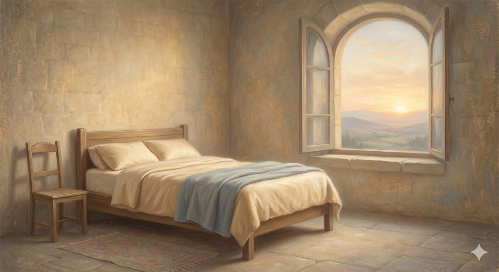

The Chamber of Peace
The bedchamber called Peace, whose window faces the sunrise — where rest is learned as a relationship trusted, not a mood summoned.
"Therefore, since we have been justified by faith, we have peace with God through our Lord Jesus Christ." Romans 5:1 (ESV)
When Christian was received into Palace Beautiful, the family gave him a room to sleep in, and Bunyan tells us its name: the chamber was called Peace, and its window opened toward the sunrise. He woke in it singing. After the long climb of the Hill, after the road from the City and the loss and recovery of his scroll, the pilgrim was simply given a place to rest — and to wake facing the dawn. This room is for that rest, and for the assurance that makes rest possible. It is rightly placed inside the house of the church, because it is in the company of God's people, under the Word and at the Table, that a weary pilgrim most often recovers the settled peace the road wears thin.
We have spoken of assurance before, on the Hill, where the question was whether a struggling believer's faith is real, and the answer was to look not at the wavering of our grip but at the firmness of Christ's. Here the question is gentler and more practical: not is my faith genuine? but how does a soul actually come to rest — and what do I do when the rest goes missing?
What it isPeace is not the absence of trouble
Begin by clearing away the counterfeit, because most people reach for the wrong thing when they reach for peace. The peace the gospel offers is not the absence of trouble, and it is not a calm mood you must work up by trying harder to feel serene. It is something far more solid and far less dependent on your circumstances: it is peace with God — a relationship set right, a war ended, an enmity put to death. Therefore, since we have been justified by faith, we have peace with God through our Lord Jesus Christ. Notice the tense. It is not a truce you maintain by good behavior, renegotiated each morning according to how you have done. It is a peace already made, signed in the blood of the cross, into which you are now invited to lie down and sleep.
This is why the chamber's window faces the sunrise. The peace does not depend on the weather of your feelings or the darkness of the present night; the morning is coming regardless, because the thing that secured it happened outside you, in history, and cannot be undone by your mood. A soul that grasps this can rest in a storm — not because the storm is small, but because the anchor is elsewhere.
In plain terms
Christian peace doesn't mean "nothing is wrong." It means "I am held, whatever is wrong." It rests on something already finished — your relationship with God set right by Christ — not on how calm you happen to feel or how well today went.
You are allowed to rest here. The pilgrim who never lies down does not last the journey.
Why it goes missingThe difference between the fact and the feeling
And yet honest pilgrims know that the feeling of peace comes and goes, sometimes violently — and a great deal of needless misery comes from confusing the feeling with the fact. The old divines drew a careful and freeing distinction: between the state of being at peace with God, which for a true believer never changes, and the sense of that peace, which can dim or vanish for a season. Your standing does not flicker when your feelings do. The sun has not gone out because a cloud has crossed it.
Why, then, does the felt assurance fade? Sometimes through unconfessed sin, which clouds the conscience the way grime clouds a window — not severing the relationship, but dimming our sense of it until it is dealt with honestly. Sometimes through plain bodily weakness — exhaustion, grief, illness, the long sleeplessness of a hard season — for we are embodied creatures, and a tired body will preach despair to the soul in a voice that has nothing to do with our true standing. And sometimes for reasons hidden in God's wisdom, who occasionally withdraws the felt sweetness of his presence from his dearest children to teach them to walk by faith and not by feeling, and to wean them off resting in the gift rather than the Giver. In every case the counsel is the same, and it is the opposite of what the anxious soul instinctively does: do not turn inward to inspect the flickering feeling and try to rekindle it by staring at it. Turn outward, to the finished work and the steady promise, and let the feeling follow the fact rather than the other way round.
How it returnsLooking out, not in
Here the deepest pattern of the whole road surfaces again, in the matter of rest. The soul that has lost its peace cannot recover it by anxious self-examination — by endlessly taking its own spiritual temperature, which is the surest way to make a fever worse. Assurance is not finally found by looking in at the quality of our faith, but by looking out at the object of it. The question is never how good is my grip on Christ? — for on a hard day every honest person's grip looks feeble — but how strong is his grip on me? And the answer to that is carved into the cross and sealed by the empty tomb: he will lose none of those the Father has given him.
So the recovery of peace runs along ordinary, unglamorous channels — the very means God has appointed and which this house exists to supply. The promises of God, returned to and rested on even when they cannot yet be felt. The Lord's Supper, where the gospel is not merely heard but tasted, a peace you can hold in your hands. The fellowship of others on the road, who can speak the truth to a soul too weary to preach it to itself. And honest prayer, which the dungeon of Doubting Castle taught us is the place where a despairing pilgrim remembers what he already holds. None of these manufactures peace. They simply turn the soul back toward the One in whom the peace was made, until the cloud passes and the sun — which never moved — is felt again.
The question is never how strong your grip on Christ is. On a hard day it always looks feeble. The question is how strong his grip is on you.
That is the chamber called Peace: a room whose window faces the dawn, where a pilgrim learns that rest is not a mood to be summoned but a relationship to be trusted, and that the morning is sure because the One who promised it does not change. Christian slept here, and woke singing, and went on stronger for the rest. There is one more room in this house — the lodge at the gate, where a pilgrim decides whether a house is worth entering at all, and learns how to find one that is.